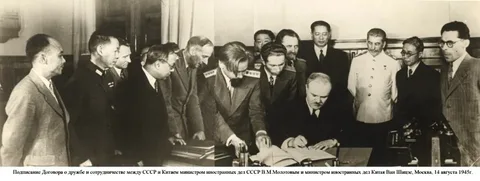
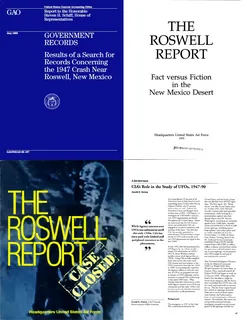
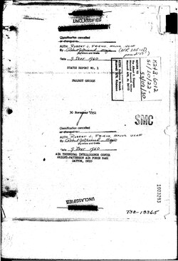
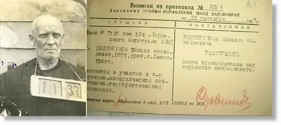

ПРОЕКТ «СИНЯЯ КНИГА»
Официальная программа ВВС США по изучению НЛО (1952–1969). 12 618 зарегистрированных случаев.
Ключевые факты
12 618
Всего зафиксировано наблюдений
701
Необъяснённых случаев
1952
Год запуска проекта
1969
Год официального закрытия
Рассекреченные документы

Меморандум 1952
Первое официальное признание существования НЛО

Отчёт о Розуэлле
Полная версия, ранее засекреченная

Проект Grudge
Предшественник Синей Книги

Заключение 1969
Почему проект был закрыт
Хронология проекта
1952 — Запуск проекта «Синяя Книга»
1953 — Массовое появление НЛО над Вашингтоном
1965 — Инцидент в Мичигане (сотни свидетелей)
1969 — Официальное закрытие проекта